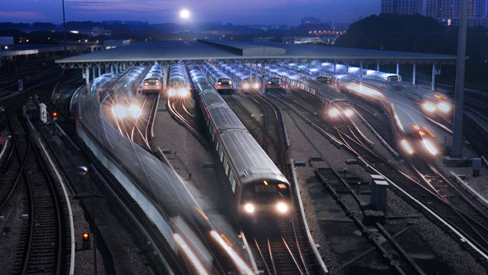

Building the future of Ahmedabad mobility
SG Metro is redefining urban transport through modern infrastructure, sustainability, and passenger-first design.
Our Mission
To provide safe, reliable, and eco-friendly metro transit that connects Ahmedabad's communities and reduces urban congestion while serving all passengers with dignity and care.
Key Commitments
- → Zero-emissions operations powered entirely by renewable electricity
- → Universal accessibility with accommodations for all mobility types
- → 24/7 operations with real-time information and customer support

A decade of growth
2014 — Feasibility Studies
SG Metro Corporation founded. Initial route planning and environmental impact assessments conducted across Ahmedabad.
2016 — Infrastructure Construction Begins
Ground-breaking ceremony. Tunnel boring machines deployed for the Red Line. First 4 stations foundational work starts.
2019 — Red Line Opens
Phase 1 operational with 12 stations. 5M passengers in first year. Integration with local bus networks begins.
2021 — Blue & Amber Lines Launch
Network expansion to 28 stations. Integrated payment system deployed. 15M annual ridership reached.
2023 — Teal Line (Airport Express)
Premium service to SG Airport opens. Real-time tracking app launched. 24M annual passengers.
2024 — Violet Line & Full Network
Cultural Heritage Loop opens. All 5 lines operational with 42 stations. Smart city integration complete. AI-powered scheduling deployed.
2026 — Present Day
Serving 30M+ annual passengers. Planning expansion to 60 stations by 2028. Leading sustainable urban mobility in India.
Principles that guide us
Sustainability
100% electric operations, carbon-neutral infrastructure, and green station design across the network.
Reliability
On-time performance, predictive maintenance, and redundant systems ensuring service continuity 24/7.
Inclusion
Accessible design for all abilities, multilingual support, and affordable fares for all income levels.
Innovation
AI-powered systems, IoT sensors, real-time data, and continuous technology integration for better service.